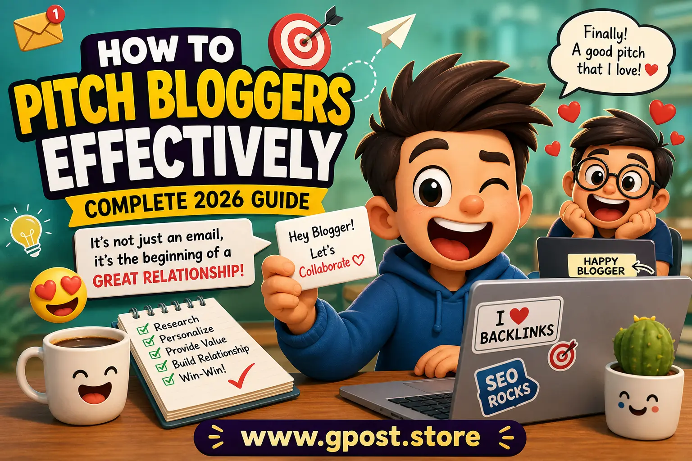

How to Pitch Bloggers Effectively (Complete 2026 Guide)
Are you sending outreach emails but getting no replies? You’re not alone. Many website owners, SEO professionals, and marketers struggle with blogger outreach because they focus too much on sending emails and not enough on building relationships.
If you truly want backlinks, traffic, and brand authority, you need to understand how to pitch bloggers effectively. In 2026, outreach is no longer about mass emailing—it’s about personalization, trust, and value.
This guide will walk you through everything: from finding the right bloggers to crafting emails that actually get responses. Whether you're doing guest posting, link building, or promoting a product, this guide is built to help you succeed.

Effective blogger outreach starts with research, personalization, and value.
What Does It Mean to Pitch Bloggers Effectively?
Short Answer: Pitching bloggers effectively means sending personalized, relevant, and value-driven emails that align with the blogger’s interests and guidelines, increasing your chances of getting a response and securing a collaboration.
In simple terms, it’s not just about asking for a backlink or guest post. It’s about showing bloggers why working with you benefits them too.
- Understand the blogger’s niche
- Follow their guidelines
- Offer real value (content, insights, audience)
- Build long-term relationships
Why Blogger Outreach is Important for SEO
Blogger outreach is one of the most powerful strategies for building high-quality backlinks and improving your website’s authority.
1. High-Quality Backlinks
When you pitch bloggers and get featured on their sites, you earn backlinks. These links help improve your search engine rankings and domain authority. Many SEOs also combine this with Buy Link Insertions strategies to scale results faster.
2. Targeted Traffic
Guest posts and mentions bring real visitors who are already interested in your niche.
3. Brand Authority
Getting featured on reputable blogs builds trust and credibility in your industry.
4. Networking Opportunities
Outreach helps you build long-term relationships with influencers and bloggers.
Types of Blogger Outreach Opportunities
1. Guest Posting
Writing articles for other blogs in exchange for backlinks. This is a core part of Guest Post Link Building strategies used by SEO experts.
2. Niche Edits (Link Insertions)
Getting your link added to existing content on a blog.
3. Product Reviews
Common in niches like books, tech, and lifestyle—bloggers review your product.
4. Collaborations
This includes interviews, expert roundups, and partnerships.
How to Find Bloggers for Outreach
Before pitching, you need the right targets. Here are proven methods:
1. Google Search Operators
- "write for us" + your niche
- "guest post guidelines" + keyword
- "submit guest post" + topic
2. Competitor Backlinks
Use tools like Ahrefs or SEMrush to find where your competitors are getting links.
3. Social Media & Communities
Twitter, LinkedIn, and niche communities are great for discovering active bloggers.
4. Manual Research
Search for blogs in your niche and check if they accept guest contributions. You can also explore curated lists like Blogs That Accept Guest Posts to save time.
Step-by-Step: How to Pitch Bloggers Effectively
Step 1: Research the Blogger
Never send a cold, generic email. Understand:
- What topics they cover
- Their writing style
- Their audience
- Their guest post guidelines
Step 2: Build Initial Engagement
Before pitching:
- Follow them on social media
- Comment on their blog posts
- Share their content
This increases your chances of getting noticed.
Step 3: Write a Personalized Email
Your outreach email should be:
- Short and clear
- Personalized (use their name)
- Relevant to their content
- Value-focused
Step 4: Provide Value
Don’t just ask for a link. Offer:
- High-quality guest post ideas
- Unique insights
- Data-driven content
Step 5: Follow Up Professionally
If you don’t get a reply, send a polite follow-up after 3–5 days.
Real Outreach Insights (Based on Experience)
According to real-world experience, pitching bloggers is not just about sending emails—it’s about building relationships.
- Always research the blogger before pitching
- Never send generic emails
- Keep emails short and focused
- Avoid fake praise—be genuine
- Don’t send heavy attachments
It’s also important to understand that not every blogger will say yes. Be flexible:
- Offer guest posts
- Suggest interviews
- Propose collaborations
After getting published:
- Say thank you
- Share their content
- Maintain the relationship
Key Insight: Blogger outreach is not just promotion—it’s long-term networking.
Common Mistakes to Avoid
- Sending mass, generic emails
- Ignoring blog guidelines
- Targeting irrelevant niches
- Over-optimizing anchor text
- Using spammy websites
Pro Tips to Get Better Results
1. Focus on Niche Relevance
Always target blogs within your niche for better SEO impact.
2. Use Natural Anchor Text
Avoid exact-match spammy anchors. Keep it natural and relevant.
3. Build Relationships, Not Links
Long-term connections bring more opportunities than one-time links.
4. Prioritize Quality Over Quantity
One high-quality backlink is better than 10 low-quality ones.
Is Blogger Outreach Still Worth It in 2026?
Yes—more than ever.
Search engines now prioritize:
- Authority
- Trust
- Relevance
Blogger outreach helps you achieve all three. But only if done correctly.
When You Should Avoid Blogger Outreach
- If you're targeting irrelevant niches
- If you're using spammy tactics
- If your content quality is low
- If you're only focused on links, not value
FAQs
1. What is blogger outreach?
Blogger outreach is the process of contacting bloggers to collaborate through guest posts, backlinks, or promotions.
2. Is blogger outreach safe for SEO?
Yes, if done properly with high-quality, relevant websites and natural links.
3. How much does blogger outreach cost?
It can range from free (organic outreach) to paid placements depending on the website.
4. How do I find bloggers in my niche?
You can use Google search operators, SEO tools, and social media platforms.
5. Does blogger outreach still work?
Yes, it remains one of the most effective SEO strategies when done correctly.
Conclusion
Learning how to pitch bloggers effectively can completely transform your SEO results. It’s not about sending hundreds of emails—it’s about sending the right message to the right person.
Focus on personalization, value, and long-term relationships. Avoid shortcuts, spammy tactics, and low-quality links.
If you apply the strategies shared in this guide, you’ll not only get more replies—you’ll build authority, traffic, and sustainable growth.
Want to scale your outreach faster? Check out our Guest Post & Blogger Outreach Service to get high-quality backlinks and real results.